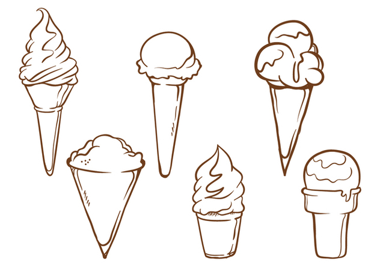

<!--
  Generated template for the CatalogosPage page.

  See http://ionicframework.com/docs/components/#navigation for more info on
  Ionic pages and navigation.
-->
<ion-header>
  <ion-navbar color="primario">
    <button ion-button icon-only menuToggle>
      <ion-icon name="menu"></ion-icon>
    </button>
    <ion-buttons end>
        <button  ion-button icon-end>
            Salir
          
        </button>
      </ion-buttons>

    <ion-title>
      Cátalogos
    </ion-title>
   
  </ion-navbar>
</ion-header>


<ion-content class="fondo">
    <ion-refresher class = "fondo" (ionRefresh)="doRefresh($event)">
        <ion-refresher-content></ion-refresher-content>
      </ion-refresher>

  <ion-list class="fondo">
    <ion-list-header color="light">
        <strong>Productos</strong>
        <ion-icon item-end name="pizza"></ion-icon>
      </ion-list-header>
    <ion-item color="tabs" *ngFor="let i of arreglo" (click) = "seleccionar(i);">
      <ion-avatar item-start>
        
      </ion-avatar>
      <h2>{{i.nombre}}</h2>
      <p>{{i.descripcion}}</p>
    </ion-item>
  </ion-list>
</ion-content>

<ion-footer>
  <ion-toolbar>
    <button color="botones" ion-button class="submit-btn"  full  type="button" (click)="nuevo();">nuevo</button>
  </ion-toolbar>
</ion-footer>